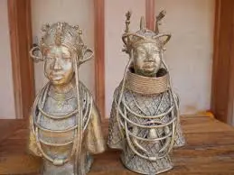
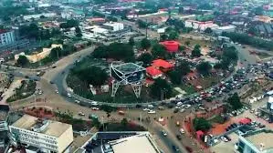
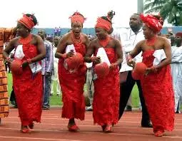
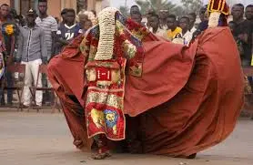
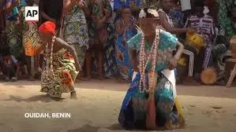
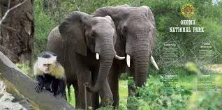
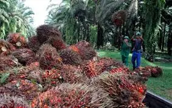

Benin Chamber of Commerce
Join Our Newsletter
Home
About
Events
Membership
Discover
Directory
contact
Local Photos of Interest

Bini Royal Bronze Carvings
Bronze Carvings

City Center - Ring Road

Bini Women Band

Ekpo Masquerade
Annual Igue Festival

Ewuwu Dance

Okomu Game Reserve

Okomu Oil Palm